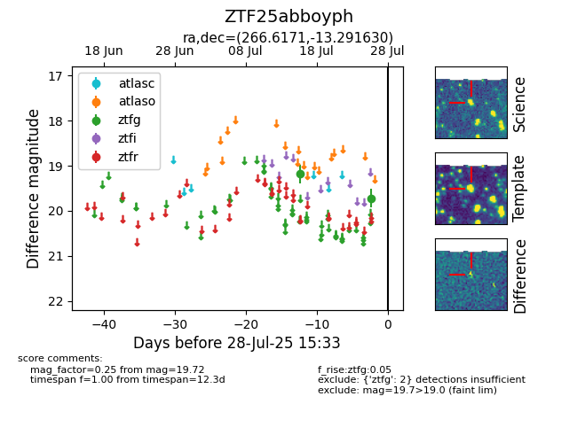

Target ZTF25abboyph at 2025-07-28 15:33, see:
FINK: fink-portal.org/ZTF25abboyph
Lasair: lasair-ztf.lsst.ac.uk/objects/ZTF25abboyph
ALeRCE: alerce.online/object/ZTF25abboyph
alt names
ZTF25abboyph (ztf,fink)
coordinates:
equatorial (ra, dec) = (266.6171,-13.29163)
galactic (l, b) = (13.5486,+7.89909)
photometry
last ztfg=19.72
2 ztfg detections
